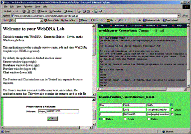

WebDNA Lab
This application provides a simple way to create, edit and view WebDNA
templates (or HTML in general).
By default, the application is divided into three views:
Source window (upper right)
Database window (lower right)
Preview window (upper left)

The Preview window can be 'floated' into separate browser window.
The Source window is considered the main view, and contains the application
menu bar. This view also contains the textarea used to edit file content.
The Database view is used to edit database files.
The Preview window is used to view 'rendered' WebDNA/HTML files.
The menu bar contains the following...
· Edit Menu - Contains all the options needed
to load, create, edit, and delete WebDNA/HTML files. It will also display
a history of the last eight files opened in the Source window.
· Preview Menu - Allows you to load and refresh
the contents of the 'Preview' window. The Preview window is also automatically
refreshed when a file or database is saved.
· Database Menu - Similar to the Edit menu, the
Database menu contains the options needed to create, load, delete, and
edit databases.
· Totorials Menu - Contains several tutorials covering the new WebDNA 5.0 features.
· Prefs Menu - Contains misc. configuration options.
· Help Menu - Contains a link to the online WebDNA
guide.
|